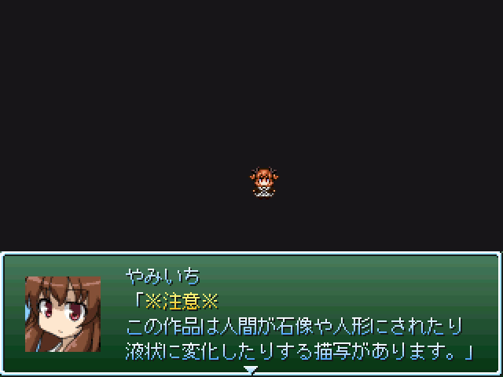

最高にCOOLな作者コメント：
以前エタったナイ軍を男性キャラ女性キャラ問わずモノに変える状態変化見るゲです
状態変化（又はASFR）というジャンルを知らない人や嫌いな人は絶対にプレイしないでください
また人によっては身体が崩れ落ちるとも見て取れる描写もあるので
15歳未満（もしかしたらR-18Gになるかも？）やグロが苦手な人もご遠慮ください
シナリオは有って無いようなもので状態変化要素がメインとなります
SS２枚目にサンプルがあります、苦手な人は注意
遅刻作品受付期限だけ見て参加に踏み切ったので多分再びエター、良くても大幅遅刻します
ダウンロードする(0.0MB)
管理人コメント：
ＡＳＦＲの意味を思わずググってしまった。世界は広い。
↓この作品の感想を書く